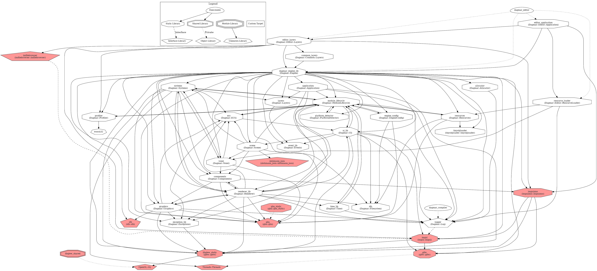

Libraries
During the development process we wanted to avoid using third party libraries wherever possible, with the only possible exception being the editor UI. A full dependency graph is below, with external libraries highlighted in red.

For a more legible view of the engine, we’ve also provided a full list of internal and external libraries and executables.
| Engine Libraries | Use |
|---|
Dagmar::Log
| Handles multiple logging levels to various output streams |
| Dagmar::Filesystem | Utility library for tracking various important disk locations
|
| Dagmar::PlatformDetector | Utility library for basic platform reflection |
| Dagmar::Renderer | Contains wrapper classes for buffers, shaders, cameras, and more |
| Dagmar::Exceptions | Provides custom exceptions for an easier debugging experience
|
| Dagmar::Allocator | Handles some memory allocation and management |
| Dagmar::ModuleLifecycle | Ensures the safe startup and shutdown of singletons |
| Dagmar::Resources | Handles the serialisation, parsing and storage of resources |
| Dagmar::EngineConfig | Parses and stores engine configurations provided by the user |
| Dagmar::ECS | Entity Component System which manages entities in a DOD fashion |
| Dagmar::UI | Contains managers for the window, I/O, and fonts |
| Dagmar::Graphics | Wrappers for meshes, textures, descriptors, etc. |
| Dagmar::Components | Components used in our ECS for attachment to entities |
| Dagmar::Systems | Systems used in our ECS, e.g. Physics, Rendering, Lighting, etc. |
| Dagmar::Scene | Handles the scene graph, and all operations on it |
| Dagmar::Time | Tracks various time metrics, both relative and absolute |
| Dagmar::Layers | Handles the dispatching of I/O events, as well as UI rendering order |
| Dagmar::Application | Provides an interface for applications to use the engine |
| Dagmar::Voxel | Manages voxel structures, mesh generations, etc. |
| Dagmar::Profiler | Tracks memory and CPU usage of the system |
| Dagmar::Engine | Links all previous libraries into one interface |
| Common Libraries | Use |
|---|
Dagmar::Common::Layers
| Contains the game layer which is used in both our apps |
Dagmar::Compiler
| Used to compile the game from the editor |
| Editor Libraries | Use |
|---|
Dagmar::Editor::Layers
| Layers used solely by the editor |
Dagmar::Editor::ResourceLoader
| Loads resources solely required by the editor at startup |
| Dagmar::Editor::Application | Wraps the whole editor application |
| Dagmar::Editor | Main function entry point |
| Game Libraries | Use |
|---|
Dagmar::Game::Layers
| Layers used solely by the game |
Dagmar::Game::ResourceLoader
| Loads resources required by the game |
| Dagmar::Game::Application | Wraps the whole game application
|
| Dagmar::Game | Main function entry point |